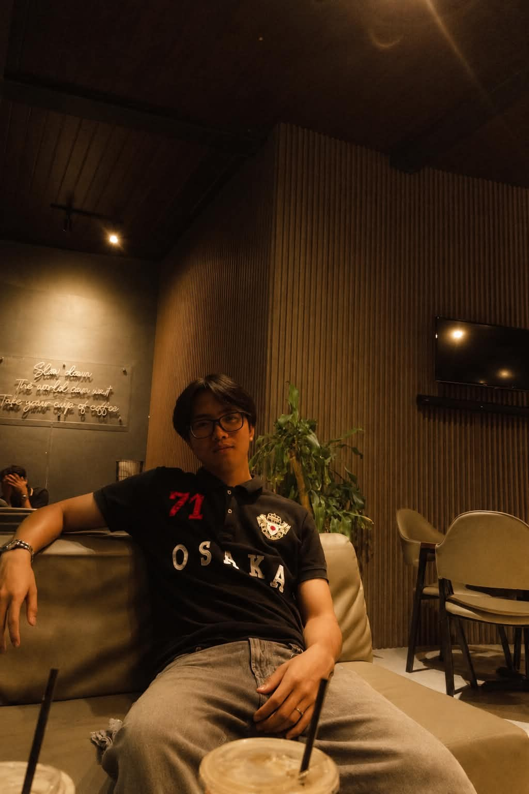
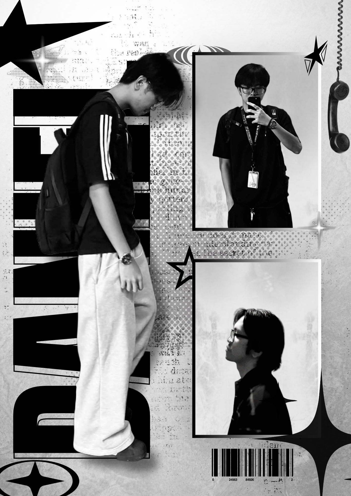

Warehouse Management System
Engineered an inventory tracking system providing real-time stock levels, automated low-stock warnings, and barcode/item dispatch logs to eliminate operational lag.
3rd-year Computer Science student at City College of Calamba. I turn user pain points into wireframes, refine clickable prototypes in Figma, and build responsive, accessible web interfaces backed by code.

Desktop UI & Java
Real-time inventory tracking, dispatch logs, and stock replenishment alerts.
 UI/UX & Prototyping
UI/UX & Prototyping
Mid-fidelity mobile ordering flow eliminating checkout friction.

Editorial & LayoutHigh-contrast typographic magazine cover and editorial spread.
A curated collection of software systems, UX prototypes, and editorial layouts exploring user clarity and interface harmony.
Engineered an inventory tracking system providing real-time stock levels, automated low-stock warnings, and barcode/item dispatch logs to eliminate operational lag.
Designed a frictionless mid-fidelity ordering flow tackling cart abandonment. Features customizable meal options, intuitive dietary filters, and a 3-step checkout.
An exploration of high-contrast typographic grids, asymmetric compositions, and negative space pacing for a modern digital and print magazine layout.
Explore problem breakdowns, user experience decisions, and key technical takeaways.
Combining the aesthetic sensibility of user interface design with the analytical rigor of computer science fundamentals.
Wireframing, clickable interactive prototypes, user journey mapping, and usability testing to ensure interfaces are natural and frictionless.
Certified in industry-standard tools for rapid visual drafting, asset generation, and interactive presentation components.
Writing clean, semantic, responsive code that turns Figma mockups into living websites and software interfaces.
Core programming principles, object-oriented software development, version control workflows, and rapid problem-solving.

I am a 3rd-year Computer Science student at City College of Calamba. My passion sits right at the intersection of human empathy and software engineering. While many developers focus strictly on backend logic and many designers focus exclusively on visuals, I bridge the gap: designing interfaces in Figma with a deep understanding of how those components will actually be implemented in code.
Section 3-CS4. Focus on Human-Computer Interaction, Software Engineering, Object-Oriented Programming, and Data Structures.
Graduated with Academic Honors • Consistently recognized in the Top 6 every semester.
Comprehensive training covering user persona definition, wireframing workflows, component auto-layout, and interactive prototyping.
If a user has to pause and wonder what a button does, the layout needs simplifying.
Designs should be feasible, accessible, responsive, and performance-conscious.
Sketch, gather feedback, test with real peers, and continuously improve.
Feedback from classmates, team members, and peer reviewers on past academic projects and hackathons.
“Robert always makes complex screens intuitive to navigate. When our project group got stuck on layout hierarchy, he sketched three clean alternatives in minutes and unblocked our entire team.”
“He listens to constructive feedback without hesitation and iterates fast. His wireframes were so structured and clearly labeled that writing the code felt completely natural.”
“Clean typography, balanced whitespace, and purposeful interaction. You can immediately see he designs for the person using the application, not just to look pretty.”
Currently open to UI/UX internships, junior frontend roles, and freelance collaborations. Send a message or reach out on any channel.
Fill out the form below to initiate an email draft directly to my inbox.
UI/UX Designer & 3rd-Year Computer Science Student
Calamba, Laguna, Philippines • r.danyelx44@gmail.com • github.com/R-crtzDedicated Computer Science student with a focused track record in user interface wireframing, interactive prototyping, and frontend implementation. Seeking a junior UI/UX or web design role to apply user-centered research and code-aware design.
Section 3-CS4. Relevant coursework: Human-Computer Interaction, Software Engineering, Object-Oriented Programming, Database Management.
Graduated with Academic Honors • Top 6 Scholar throughout high school.
Certified in interactive wireframing, design system components, auto-layout, and usability prototyping.
Design: Figma, Canva, User Flows, Wireframing, Rapid Prototyping, Usability Testing.
Development: HTML5, CSS3 (Grid & Flexbox), JavaScript (ES6+), Java, Python, Git/GitHub, VS Code.